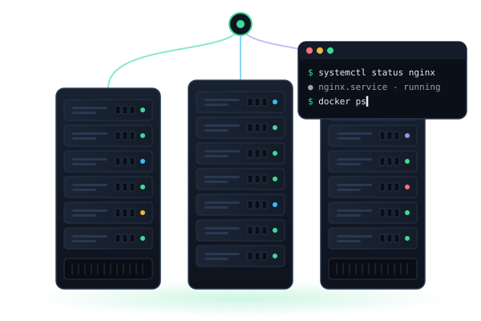

devops_journey
/lab
Bosh sahifa
Vazifalar
Laboratoriya
Natijalar
Reyting
Qidirish…
⌘K
47:12
SA
sardor@lab
:~$ whoami
Salom, Sardor.
Serveringiz kutyapti.
Davom etmoqda
Vazifa 03 / 06 · Linux · O'rta · 30 ball
Systemd Service Creation
2/4 checks
Terminalni ochish
Topshiriqni o'qish

{{s.label}}
{{s.value}}
{{s.of}}
./learning-path
Linux asoslaridan avtomatlashtirishgacha — 6 ta amaliy vazifa
55 / 175 xp
0{{t.n}}
{{t.title}}
{{t.meta}}
{{t.status}}